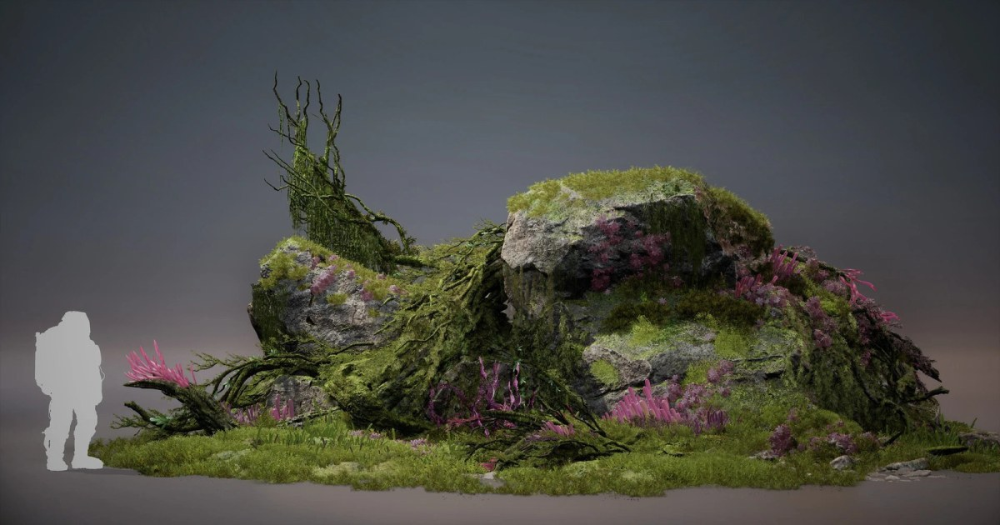

《The Alters: Last Variable》植被管線：Nanite 實體葉片、PCG 散佈與全域 HISM
三名環境美術建立可在荒蕪與地景改造兩種狀態運作的關卡，使用 Blender、ZBrush、Substance、UE5 PCG 與不透明 Nanite 幾何製作外星植被。

Blender ★★★★☆
完整分析
外星植被技術流程
團隊先以 beauty corner 測試資產、Shader 與地形混合，再用不透明 Nanite 切片幾何製作葉片，配合頂點色驅動 WPO 風動。
大範圍製作影響
關卡散佈完全依靠引擎內 PCG、Geometry Script 苔蘚與射線散佈工具，並大量重用 Level Instance，以便在短時間填滿過度生長的世界。
效能限制與驗證
大量 Blueprint 與 Packed Level Actor 產生分散 HISM，技術團隊改為每種網格全關卡共用一個全域 HISM；非均勻縮放且有碰撞的 Actor 不宜打包。
BRIEF｜來源已驗證；證據深度較有限，完整分析會明確區分已知資訊與待驗證事項。